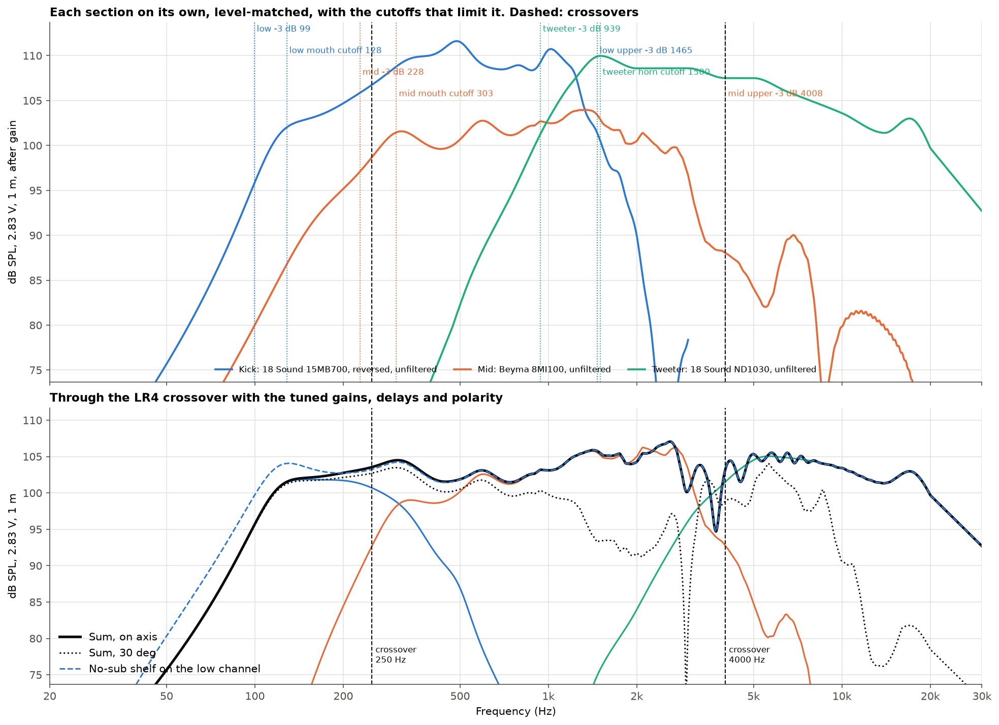
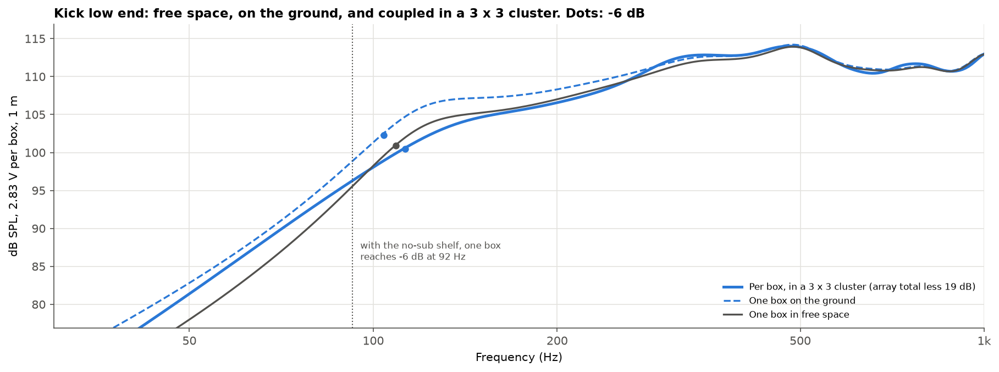
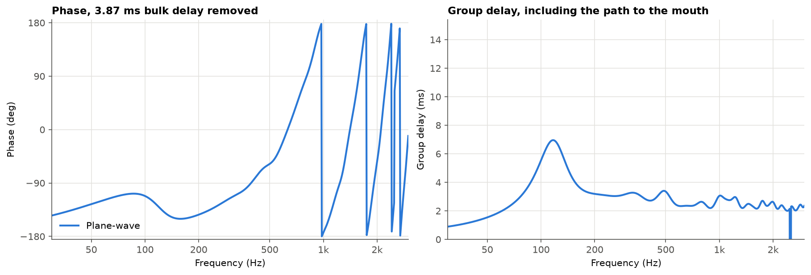
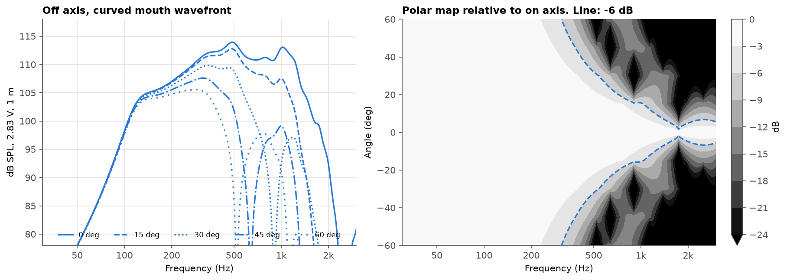
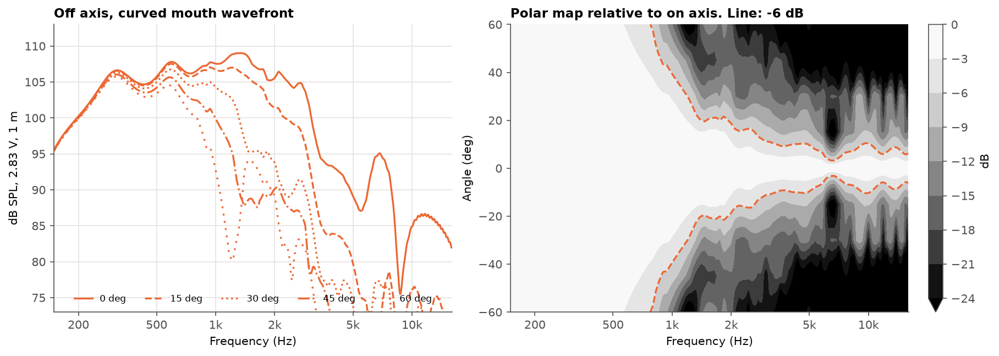
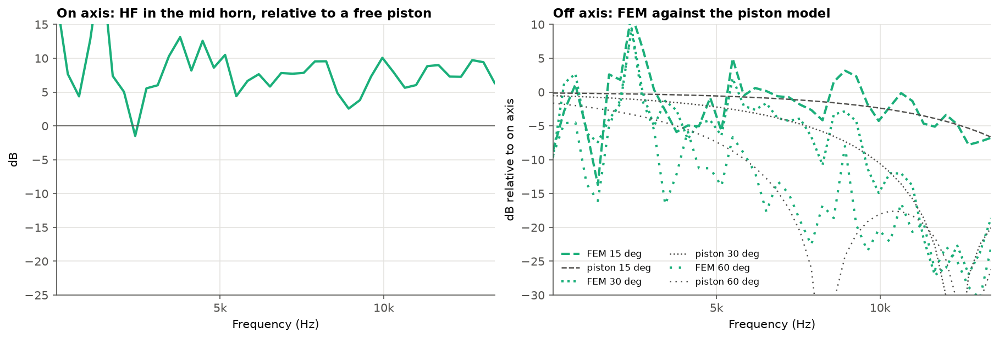
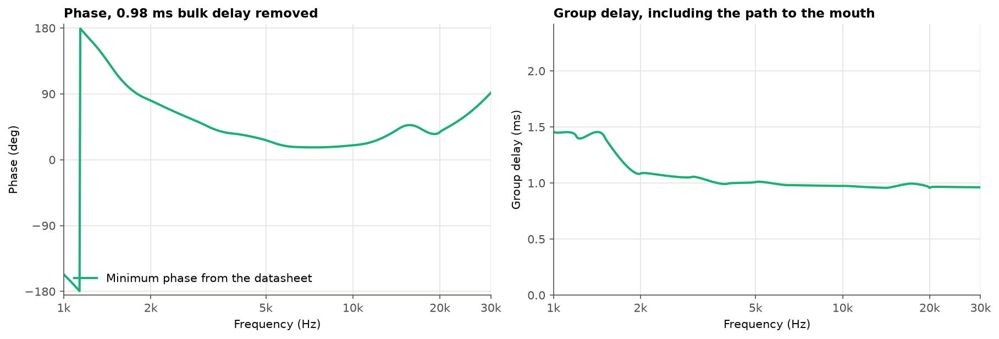
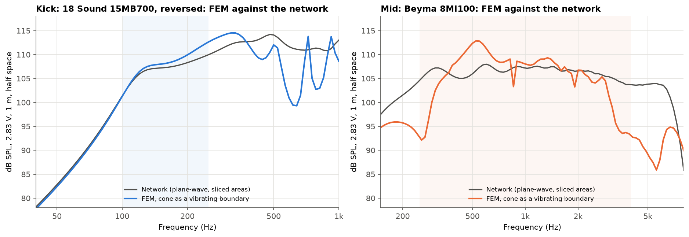

Simulation
Each horn is modelled from its real profile. A plane-wave network, built slice by slice from the geometry, screens thousands of designs; the cone is a distributed source, not a piston. Axisymmetric FEM (and a 3D check of the square kick horn) then validates the chosen one, with the cone as a vibrating boundary.
Full range


| DSP | Setting |
|---|---|
| Crossover | Linkwitz-Riley 24 dB/oct at 250 Hz and 4000 Hz |
| Gains (dB) | low -2.3, mid -5.0, tweeter +0.0 |
| Delays (ms) | low 0.00, mid 1.26, tweeter 0.26 |
| Polarity | low +, mid +, tweeter + |
| Mid EQ | high shelf +12.0 dB at 2200 Hz |
| No-sub option | +6 dB low shelf at 124 Hz with a 30 Hz high-pass: -6 dB at 92 Hz, safe to about 163 W |
Kick low end
The kick is a kick bin, not a sub, and like the HD-15 it is meant to run with one. One box on the ground is down 6 dB at 104 Hz (109 Hz in free space). The small sealed chamber (sealed resonance about 161 Hz) keeps the cone under control below the horn's range, at the cost of extension. Without a sub, the no-sub shelf takes one box to 92 Hz, but excursion then limits it to about 163 W.

Kick
Reversed 18 Sound 15MB700, hyperbolic-exponential (T = 0.6) horn, square mouth.




Mid
Beyma 8MI100 in the OS horn round the bullet. The response above 1 kHz includes the FEM correction (below).





HF
18 Sound ND1030: datasheet response on axis, with the off-axis shape from the FEM of its printed horn inside the mid horn.



FEM validation
Kick. FEM against the network, coupled to the driver, 40 to 250 Hz: 0.9 dB RMS, 2.5 dB worst. Above about 400 Hz the FEM shows cross modes in the wide passage near the mouth, which a plane-wave model cannot; they are well above the 250 Hz crossover.
Mid. Within about 1 dB of the network up to 2.7 kHz. Above that the FEM falls 8 to 12 dB by 3 to 6 kHz: the air over the cone behaves as a radial cavity, which the network lumps into one node. So the upper crossover was picked again with the FEM correction applied (3500 Hz: 5.71, 4000 Hz: 5.82, 4500 Hz: 6.21, 5000 Hz: 6.24, lower is better), and 4 kHz is the highest that scores within 0.15 of the best. It needs the full 12 dB mid shelf. A two-slot phase plug, as in compression drivers, would push this up; that is the main open item for the mid.

Limits
- Cone, spider and basket shapes are estimated from datasheet drawings; the shroud gap and bullet nose depend on them.
- Cones are rigid in the models. Mid cone breakup above about 1.5 to 3 kHz is not modelled.
- The felt is a loss factor, not a measured material.
- Free-space results use a baffle-step shelf for the box front; the FEM is in half space.
- The HF unit uses its datasheet curve, read by eye (about 2 dB), measured by the maker on their own horn.
- Array results are power sums of one box's polar; the low-frequency cluster uses a mutual-load approximation.
- Nothing has been built or measured.